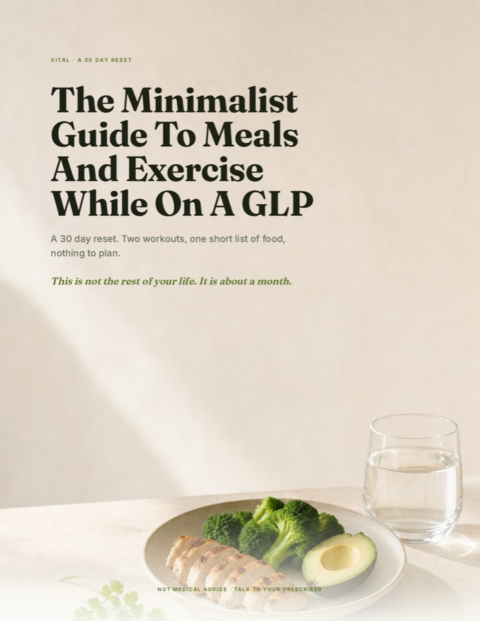

01
Cottage cheese
ice cream
Two ingredients, tastes like cheesecake, 20 grams of protein.
Confirmed / check your inbox
It lands in the next couple of minutes. If it is not there, look in Promotions or Spam and drag it across, so the rest of the 30 days arrives where you can find it.
Read it online nowThe whole guide, in your browser. No waiting on the email.

One more thing
The guide keeps your meals boring on purpose, because boring is what stops you deciding. Nobody stays with boring for 30 days straight though, so once or twice a week we text you one small thing worth making.
01
Two ingredients, tastes like cheesecake, 20 grams of protein.

02
Stir, chill, eat. The one that gets people through the evening.

03
Make a tray on Sunday, break off a piece when you want one.
The easy part
Some days nothing sounds good, and pushing food you do not want is how people end up nauseous and skipping protein altogether. The guide gives you an override for that day: any meal, any day, a shake counts as done.
Nourish+ takes that meal off you, with the protein your muscle needs and nothing to prepare or decide. Keep it in the house before you need it.
See Nourish+